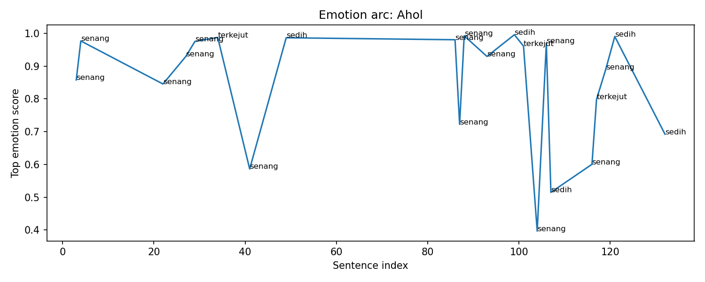
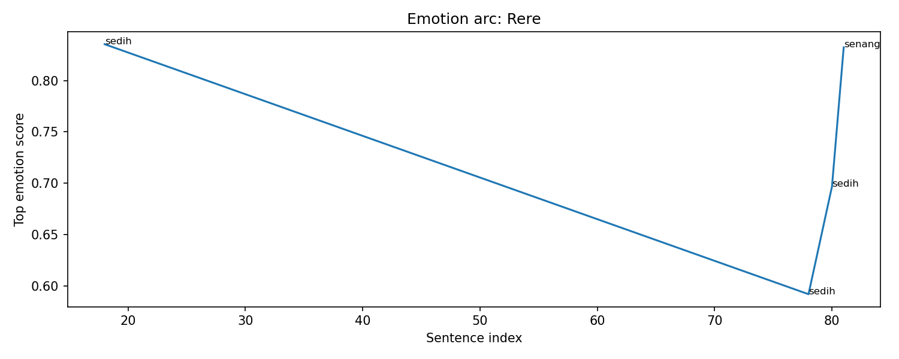
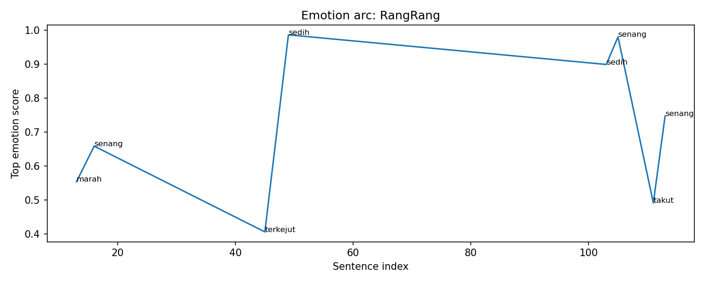
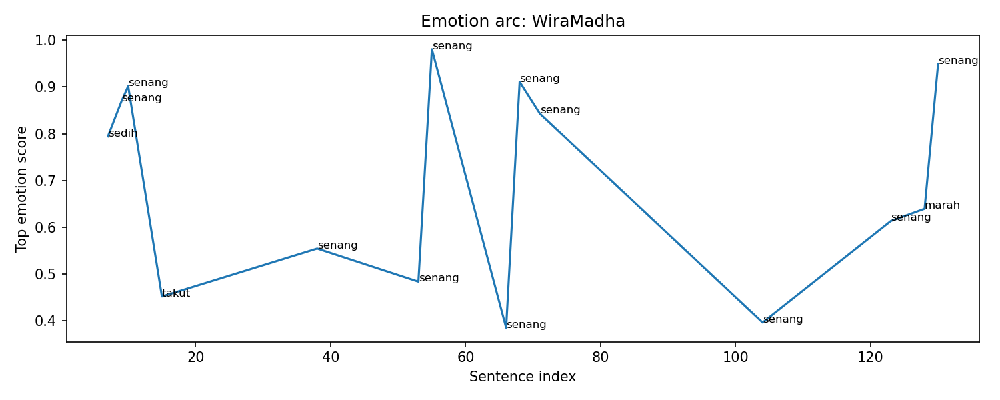
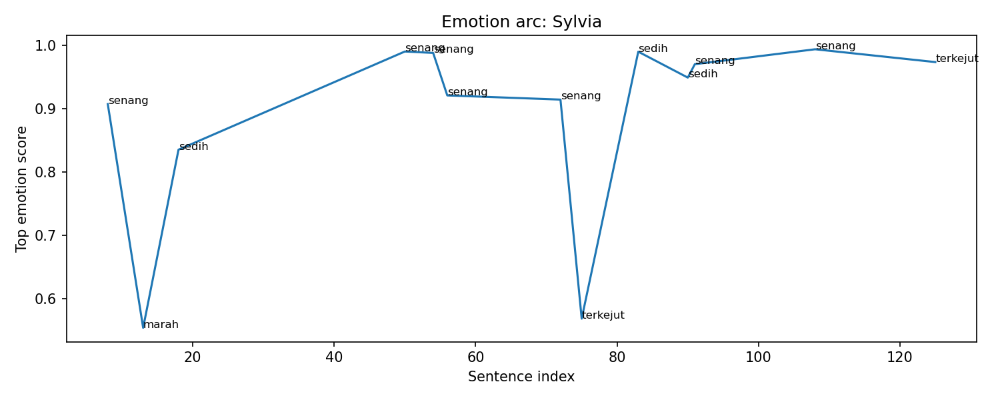
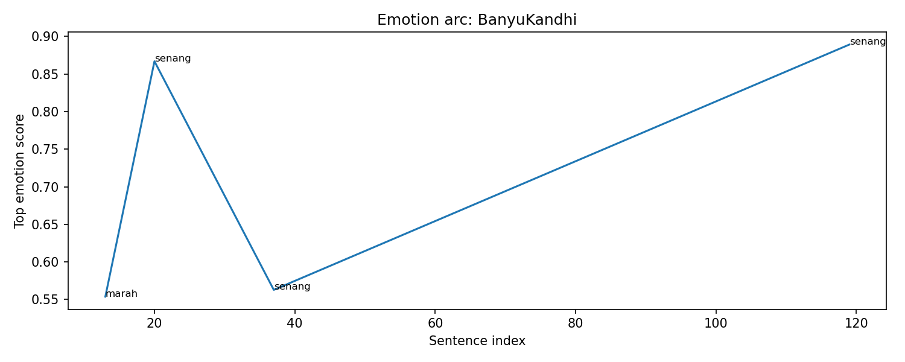

Overall Chapter Summary
A group of adventurers faces the powerful entity Ahol in a volcanic battleground, using their skills and teamwork to survive and combat the threat.
Chapter Drift Analysis
Similarity: 0.4123
Drift: 0.5877
High drift. The chapter may strongly shift tone, theme, mood, or narrative direction.
Bug Severity Distribution
Story Bugs Found
Raka Wiradharma's technical calculations in the heat of combat are introduced, but no details about his prior experiences or skills that allow for such calculations are given. This omission leaves readers questioning the plausibility of his actions.
Appears on timeline:
- chapter-level: No exact event match in Chapter-level issue at
Unknown
Type: Missing Details
Definition: A vital piece of information, a key item, or a character’s injury is forgotten, conveniently disappears, or magically reappears between chapters or scenes.
WiraMadha exhibits a puzzling dichotomy between being a capable leader and needing to act in a way that is deceptive for the sake of the party's performance. This might strain his established character as a responsible leader committed to team success.
Appears on timeline:
- matched by evidence: ev_001_005 · Ahol's Counterattack in sc_001 · Battle against Ahol in the Volcano at
Kawah Bromo
Type: Out-of-Character Moments
Definition: This occurs when a character acts outside of their established nature, typically for the sake of moving the plot forward.
Character Sheet
Summary of character state, current actions, potential future plot hole risks, and acquired items/spells in this chapter.
Character Arc Analysis
Raka Wiradharma

Emotional Arc Summary
In this chapter, Raka Wiradharma experiences a moment of 'terkejut' (shock) as he grapples with complex technical calculations behind his helmet. This emotional peak suggests a significant internal response to the chaotic environment of the volcanic battleground, yet it lacks visible external actions that reflect this shock.
Action-Based Interpretation
Despite the emotional intensity indicated, Raka does not take actions that typically accompany feelings of shock. Instead of reacting to the threat posed by Ahol or taking decisive action, he appears absorbed in mental calculations, signaling a disconnect between what he feels and what he does.
Key Turning Point
Raka's moment of shock, centered on his calculations, could serve as a turning point if followed by a carefully calculated strategy that influences the group's actions, but this is not evidenced in the chapter.
Narrative Meaning
The gap between Raka's shocking realization and the absence of corresponding proactive measures may suggest a character struggling with analysis paralysis in the face of danger.
Potential Writing Issue
The emotional spike of shock lacks narrative payoff through Raka's actions, which may confuse readers regarding his role in the adventurers' efforts against Ahol.
Ahol

Emotional Arc Summary
Ahol experiences a predominantly positive emotional trajectory, with instances of joy associated with its formidable presence and powerful abilities. However, it faces significant shifts to surprise and sadness in response to the adventurers' escalating attack strategies.
Action-Based Interpretation
Ahol initially appears confident, exuding joy as an imposing figure amidst the chaos of battle. However, upon BanyuKandhi's failed entrapment attempt, Ahol's confidence is shaken, marked by surprise at the elemental incompatibility. The emotional shift reflects its dynamic reactions to sustained attacks from the adventurers, particularly as its defenses weaken, leading to moments of sadness as it realizes the threat level.
Key Turning Point
The critical moment occurs when Ahol suffers notable damage from the water spells, moving from a position of strength to vulnerability. This shift is marked by a drop in its HP and the timing of WiraMadha's strategic commands.
Narrative Meaning
Ahol's emotional arc illustrates the theme of resilience against overwhelming odds. As the entity transforms from dominance to struggle, it enhances the tension between the adventurers and Ahol.
Potential Writing Issue
There is a potential inconsistency with emotional spikes that do not clearly align with the severity of the events, particularly in moments of sadness and surprise where Ahol's reactions may feel unsupported by narrative events.
Rere

Emotional Arc Summary
In this chapter, Rere experiences a range of emotions, predominantly sadness and happiness. The initial call for Rere reflects a sense of urgency and responsibility, leading to feelings of sadness as Rere is summoned.
Action-Based Interpretation
Rere is summoned by Sylvia to provide a fire resistance buff, an action that shifts the environment to a more manageable state for the party. This act of providing aid transitions the emotional tone from sadness to happiness, as Rere's presence positively impacts the group.
Key Turning Point
The pivotal moment occurs when Rere successfully casts the fire resistance buff. This transition marks a shift from a potential feeling of helplessness to empowerment, highlighting Rere's role in turning the tide against Ahol.
Narrative Meaning
This emotional arc illustrates the themes of teamwork and resilience in the face of overwhelming odds. Rere’s transformation from sadness to joy symbolizes the importance of support systems in overcoming challenges.
Potential Writing Issue
While Rere’s emotional shifts align with actions, the initial sadness seems excessive given the proactive role played. This may create a sense of inconsistency in Rere's emotional response to the situation.
RangRang

Emotional Arc Summary
RangRang experiences a dynamic emotional journey in this chapter, fluctuating between anger, surprise, sadness, and joy as he engages with Ahol.
Action-Based Interpretation
Initially, RangRang feels anger as he measures the dire situation, but he quickly shifts to excitement as he takes the initiative to attack Ahol, capitalizing on Sylvia's prior actions. His emotions transform again into surprise as he executes impossibly agile maneuvers, followed by a moment of sadness as he prepares to strike. However, this sadness is juxtaposed with joy when he successfully delivers impactful hits, reacting with a wide grin.
Key Turning Point
The turning point comes when RangRang successfully exploits Ahol’s weakness, transitioning his emotions from sadness and fear to elation and confidence, as he feels empowered by his successful attacks.
Narrative Meaning
This emotional arc underscores themes of teamwork and individual capability. RangRang's emotions reflect the tension of battle, enhancing reader engagement in high-stakes scenarios.
Potential Writing Issue
The significant emotion of sadness appears somewhat abrupt, especially when contrasted with the subsequent joy, indicating a possible inconsistency in emotional continuity.
WiraMadha

Emotional Arc Summary
WiraMadha experiences a fluctuating emotional journey, ranging from sadness and fear to joy and anger. Starting with a sense of sadness about his level relative to the threat, he gradually finds strength and determination, culminating in a fevered joy after a tactical success against Ahol.
Action-Based Interpretation
WiraMadha's actions, such as shielding Sylvia from lava projectiles, highlight his selfless bravery. His subsequent organization of party movements during Ahol's counterattack showcases his leadership, which contrasts his initial apprehension. Despite moments of fear, his commitment to protecting his comrades reignites his confidence.
Key Turning Point
The pivotal moment occurs when WiraMadha decides to face the chaos of Ahol's attack, transforming fear into a proactive stance that encourages both him and his teammates.
Narrative Meaning
This chapter emphasizes themes of courage, teamwork, and growth. WiraMadha transitions from fearful uncertainty to assertive leadership, reflecting a classic hero's journey.
Potential Writing Issue
There are instances of emotional spikes, particularly the shift from fear to joy, that could benefit from further development to provide a smoother emotional transition and prevent perceived inconsistency.
Sylvia

Emotional Arc Summary
Sylvia experiences a complex emotional journey, initially feeling joyous and empowered as she unleashes her spells. However, she fluctuates into sadness and panic as chaos erupts around her with Ahol's counterattack.
Action-Based Interpretation
In the beginning, Sylvia's emotions are high as she summons Rere and effectively counters Ahol's attacks, demonstrating confidence and excitement. This is illustrated when she shouts in joy. Yet, as the battle intensifies, her emotional state shifts to sadness, reflecting her worry for her team, particularly when things do not go as planned, culminating in moments of panic when their strategy falters.
Key Turning Point
The turning point is marked by Ahol’s powerful counterattack. This moment thrusts Sylvia from a state of confidence to one of fear and urgency, significantly impacting her emotional trajectory.
Narrative Meaning
This emotional arc illustrates the unpredictability of battle and the weight of responsibility felt by those who fight for their friends, highlighting Sylvia's growth.
Potential Writing Issue
The emotional spikes as Sylvia shifts from joy to sadness may lack sufficient buildup, potentially causing inconsistencies in her emotional arc amidst the chaotic setting.
BanyuKandhi

Emotional Arc Summary
BanyuKandhi experiences a rollercoaster of emotions throughout the chapter. Initially, he feels a mix of anger (0.55) and joy (0.87) linked to his failed attempt to restrain Ahol and the excitement of combat. His joy peaks (0.89) as he successfully dodges Ahol's attacks and actively engages in dealing damage.
Action-Based Interpretation
Initially, BanyuKandhi's attempt to use a nature-based spell to restrain Ahol symbolizes his determination but leads to frustration upon failure. This anger transitions to elation as he deftly avoids steaming eruptions, showcasing his agility. His spirited cheers while attacking Ahol indicate a renewed confidence and thrill in the battle despite previous setbacks.
Key Turning Point
The turning point occurs when BanyuKandhi evades an attack, signaling a shift from frustration to excitement, aligning his emotional state with his successful actions in combat.
Narrative Meaning
This arc illustrates the volatile nature of battle, emphasizing that setbacks can spur renewed vigor and teamwork, showing BanyuKandhi's resilience.
Potential Writing Issue
The emotional spikes, particularly the quick transition from anger to joy, may seem inconsistent without further character exploration or context on his emotional stakes.
Event Timeline
Lore Graph
Nodes represent characters, scenes, events, items, facts, and locations.